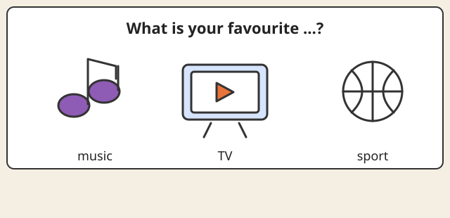
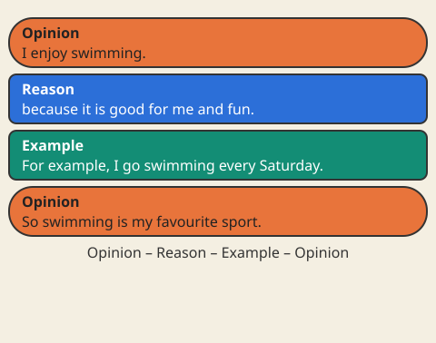

Sport, Musik und Fernsehen
Mit einem KI-Tutor lernen
Ein KI-Tutor erklärt dir diese Seite und hilft dir bei den Aufgaben. Wähl deinen Assistenten:
Mit Claude öffnen Mit ChatGPT öffnen Mit Mistral Vibe öffnen
Du nutzt dein eigenes Konto beim Anbieter. Der Assistent ist kein Angebot von lernapps.net: lernapps liefert nur Inhalte und Aufgaben. Die Wahl gilt für alle Seiten, nur auf diesem Gerät.
Mr Hill fragt nach euren Lieblingen

© CC-BY-4.0Mr Hills Poster neben der Meinungswand. Die Klasse schreibt dazu in den Klassenchat.
Mr Hill fragt nach der Lieblingsmusik, der Lieblingssendung und dem Lieblingssport. Sophie, Ellie und Amir antworten im Chat.
Aufgabe
Lösung
I plays table tennis after school
Bei I bekommt das Verb kein -s.
I play table tennis after school richtige Antwort
Nach I steht das Verb ohne am und ohne -s.
I am play table tennis after school
Vor play steht kein am.
Im simple present steht nach I das Verb allein.
Das kannst du danach: Du erzählst, welche Musik, welche Sendung und welchen Sport du magst, und sagst warum.
Ein Chat über Musik, eine Serie und Sport
| Englisch | Deutsch |
|---|---|
| favourite | Lieblings- |
| prefer | lieber mögen |
| series | Serie |
| episode | Folge |
| quiz show | Quizsendung |
| actor | Schauspieler, Schauspielerin |
| concert | Konzert |
| surprise | Überraschung |
| basketball | Basketball |
| volleyball | Volleyball |
| hockey | Hockey |
| karate | Karate |
| skating | Schlittschuh laufen, skaten |
| running | Laufen, Joggen |
| yoga | Yoga |
| tennis | Tennis |
Ellie, Amir und Sophie erzählen im Klassenchat, was sie mögen. Die Zahlen sind die Zeilen.
1 Ellie: Mr Hill wants to know our favourites. My favourite music is pop. I love singing in my room!
2 Amir: I like rock music, but my favourite thing is sport. I like playing football on Wednesdays, and I go swimming on Saturdays.
3 Sophie: I do judo on Mondays. It is difficult, but I enjoy it.
4 Ellie: Judo? I do not like judo. I prefer dancing.
5 Amir: What about TV? I watch a quiz show on Thursdays. It is funny, and I learn new things.
6 Sophie: I like quiz shows, too. But my favourite is a new series about a school band. The songs are great, and the actors play their own music.
7 Ellie: I think the series is boring. The story is too slow.
8 Sophie: I disagree. I think it is exciting because every episode ends with a surprise.
9 Amir: For example, last week the band lost their guitar one hour before a concert!
10 Ellie: That sounds funny. I want to watch one episode.
11 Sophie: Great! Then we can talk about it on Friday.
play, do, go und like mit -ing

© CC-BY-4.0Ein Burger zu einem Lieblingssport. Orange sind die Meinungen, blau ist der Grund, grün das Beispiel.
Merke
Sport mit play, do oder go: play für Ballspiele und Spiele (play tennis, play chess), do für Sportarten wie do yoga, do gymnastics, go für Sportarten mit -ing (go cycling, go swimming).
Sagen, was du magst: Nach like, love und enjoy steht meist das Verb mit -ing: I love dancing. Bei like und love geht auch to + Grundform (I like to dance), hier üben wir -ing. Bei he und she steht likes: She likes music.
Lieblings-: My favourite sport is tennis. Nach is steht der Name der Sportart, nicht play.
Belegen, ordnen und schreiben
Aufgabe
Lösung
Schwimmen
Das macht Amir am Samstag.
Fußball
Das spielt Amir am Mittwoch.
Judo richtige Antwort
Das sagt Sophie in Zeile 3.
Bei Judo steht do, bei Fußball steht play.
Aufgabe
Lösung
Zeile 6
Hier sagt Sophie, was sie mag.
Zeile 9 richtige Antwort
Amir erzählt, was in einer Folge passiert ist.
Zeile 7
Hier sagt Ellie nur ihre Meinung.
Zeile 8
Hier steht der Grund mit because, aber noch kein Beispiel.
Ein Beispiel erzählt, was wirklich passiert ist.
Aufgabe
Wähle das Verb, das zur Sportart passt.
- Ich spiele Basketball. → I … basketball.
- Ich gehe samstags laufen. → I … running on Saturdays.
- Ich mache Karate. → I … karate.
Lösung
- I play basketball.
- I go running on Saturdays.
- I do karate.
Aufgabe
Wähle die richtige Form.
- Ellie singt gern. → Ellie … singing.
- Ich höre gern Musik. → I enjoy … to music.
- Meine Freunde mögen Serien. → My friends … series.
Lösung
- Ellie likes singing.
- I enjoy listening to music.
- My friends like series.
Aufgabe
Lösung
Richtige Antwort: 1. I love playing basketball., 2. It is exciting because the game is fast., 3. For example, last week we won a match in the last minute., 4. So basketball is my favourite sport.
Meinung, Grund, Beispiel, Meinung.
Aufgabe
Schreibe die Sätze auf Englisch. Satz 1: Ich spiele gern Hockey. Satz 2: Mein Lieblingssport ist Volleyball. Satz 3: Wir gehen sonntags Schlittschuh laufen. Satz 4: Ich spiele dienstags Fußball. Die englischen Wörter sind nur eine Hilfe: Ergänze, was für einen ganzen Satz fehlt.
- I · like · play · hockey
- my · favourite · sport · volleyball
- we · go · skating · Sunday
- I · play · football · Tuesday
Lösung
- I like playing hockey. (auch richtig: I like to play hockey.; I play hockey.)
- My favourite sport is volleyball.
- We go ice skating on Sundays. (auch richtig: We go ice skating on Sunday.; We go ice skating every Sunday.; We go skating on Sundays.; We go skating on Sunday.; We go skating every Sunday.)
- I play football on Tuesdays. (auch richtig: I play football on Tuesday.; I play football every Tuesday.)
Aufgabe
Hör zu und schreibe, was du hörst.
- KI
- KI
- KI
Lösung
- Does your friend like playing the guitar?
- My sister does judo on Fridays.
- I enjoy watching a good series after school.
Dein eigener Burger
Aufgabe
Hör zu, sprich nach und nimm dich auf. Vergleiche dann mit dem Original.
Tipp
Hör zu. Sprich dann langsam nach.
- What is your favourite sport?KI
- Do you like this song?KI
- What kind of music do you like?KI
Zum Aufnehmen braucht diese Aufgabe JavaScript. Die Beispiele kannst du auch ohne anhören.
Lösung
- What is your favourite sport?
- Do you like this song?
- What kind of music do you like?
Offene Aufgabe
Wähle Musik, Fernsehen oder Sport. Schreibe in vier Sätzen deinen Burger zu etwas, das du magst: Meinung, Grund, Beispiel, Meinung.
Tipp
Die App bewertet nicht. Prüfe deinen Text anhand der Punkte.
Eine gute Antwort enthält:
Lösung
I love listening to piano music. It is calm because there are no words. For example, I listen to a piano piece after school, and I relax within ten minutes. So piano music is my favourite music.
Wie es weitergeht
Auf der nächsten Seite sprichst du über Medien und soziale Netzwerke und über ihre Chancen und Gefahren.
Fehler gefunden oder eine Idee für diese App?